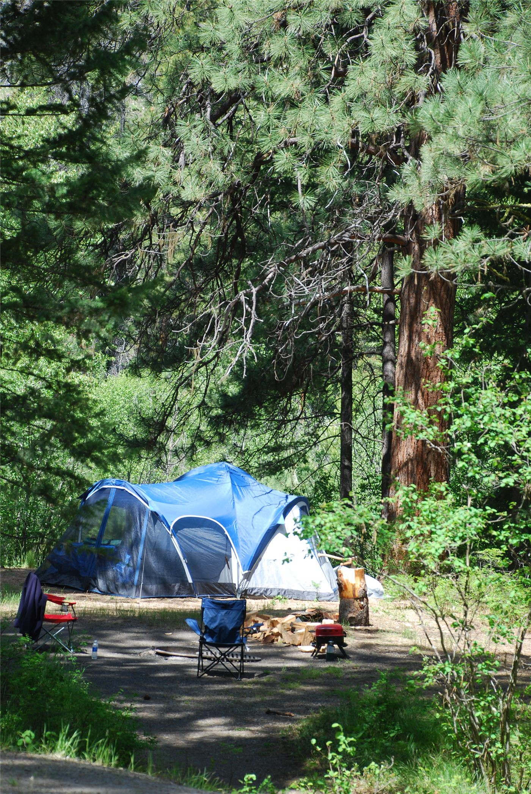

부산화교중고등학교 가을 여행 공고… 학년별 일정 안내
부산화교중고등학교가 가을 여행 공고를 냈다. 학년별 일정과 준비물, 참가 신청 절차가 안내됐다.
진태흥 기자 · 2026.09.03
橋화인소식

공고는 지난 11일 자로 게시됐으며, 학기 초 학사 일정과 함께 준비가 진행돼 왔다. 참가 여부는 보호자 확인을 거쳐 접수한다.
광고 문의 · 300×250학교 단위 여행은 학생들이 학교 밖에서 함께 시간을 보내는 몇 안 되는 기회다. 화교 학교의 경우 학년당 인원이 많지 않아, 학년 간 교류가 자연스럽게 이뤄지는 자리이기도 하다.
안전 관리와 인솔 계획, 응급 상황 연락 체계는 사전에 보호자에게 공유된다. 지병이 있거나 복용 중인 약이 있는 학생은 사전에 알려야 한다.
비용과 준비물은 공고에 명시돼 있으며, 가정 형편에 따른 지원 여부는 학교에 문의하면 된다.
일정 변경이 있을 경우 학교 공지를 통해 다시 안내된다.
출처·참고 (사실 확인용 — 본문은 직접 재작성)
· 釜山華僑中學 公告 2026.08.11 — 學校網站
· 釜山華僑中學 公告 2026.08.11 — 學校網站